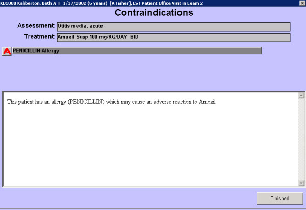

| Solution: |
In this solution...
|
| Details: |
How to Access This Screen This screen can be accessed by selecting the red 'A' that appears to the right of a contraindicated treatment on any treatment list. (If no treatments are contraindicated, the 'A' will not appear.) Screen Example 
Want to Learn More?
|
| Symptoms: |
| ID: 040817010074748 | Last Modified: 01/27/2009 05:21:35 PM |